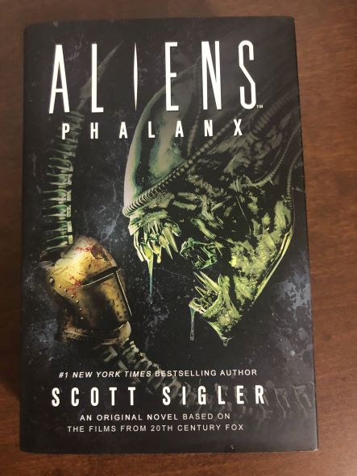

The Dawn of Podcasting
In the beginning there were 3.
In March of 2005, 3 writers had independently come to the same idea: "why not 'publish' my novel as a podcast?" and within weeks of each other, their first episodes were released.
The 3 fathers of the podcast novel (podiobook) are:
- Tee Morris
- Morevi
- Mark Jeffery
- The Pocket and the Pendant
- Scott Sigler
- Earthcore
This is the story of Scott Sigler, and the world's longest running fiction podcast!
About Scott Sigler
The Future Dark ∅verlord
Scott Sigler
Scott is a #1 New York Times best selling author. He has published his books through Crown Publishing, Del-Rey, and self-published a series of limited edition, numbered, and signed books through his company, Empty Set Entertainment.
Born in Michigan, Scott grew up with a love of sports. Playing football in high school and wrestling throughout college. He has the misfortune of being a lifelong Detroit Lions fan. He now lurks in San Diego, California with his wife and business partner, A (yes that is her real name).
Scott plays bass and sings for the band Superweapon. While he is an inaugural member of the Podcasting Hall of Fame, his first short story "Tentacles, Tentacles, and more Tentacles" (written circa age 8) remains unpublished by a major publishing house.
The World's Longest Running Fiction Podcast!
Scott Sigler's podcasts have been dropping every Sunday, with a few exceptions, ever since 2005. Scott's dedication to his fans is second to none, to the point where many fans have found themselves named in his books!
Scott has always been accessible to fans through social media, and ancillary podcasts, but during the COVID pandemic, he and A have been live-streaming every Wednesday on multiple platforms, chatting with fans and talking with multiple guests in their "Sigler in Place" series.
The Junkies
The Junkies
Sigler's fans kept responding to his stories, begging for more, and soon became known as "Junkies." A term that remains to this day. In the podcast, he has assumed an "over-the-top morning DJ" persona that is quite entertaining. Dubbing himself, the "Future Dark ∅verlord" (or FD∅), general Siglerisimo has plans for plaid tanks to roll once he rules the world!
Dedicated to his fans, Scott started SiglerFest. For the last 9 years BC (before COVID), during the October long weekend, Junkies from around the world gathered for a celebration of Siglerdom. They would hang out with the FD∅, meet some of his "cousins," including Pope Siglericus XXX and Francis Dominic Oliveri, bowl, sing karaoke, watch the Detroit Lions lose, and much more.
The Siglerverse
The Siglerverse
Scott has written several series. Most of his series are within a single story universe, affectionately know as the "Siglerverse," which is comprised of 3 main eras:
- The Modern Era: Books that take place in the present (by publication date).
- The GFL Era: Comprised of the Crypt and the Galactic Football League series, it takes place 500-700 years in the future.
- The Generations Era: takes place some 1800+ years into the future.
As the Siglerverse books are all wound around one central universe, it's always fun to see Easter Eggs, and foreshadowing from books span across his various series. You'll see things in Infected that won't show up again until the GFL series. Or the Galactic Football League using technology that was invented by Earthcore.
The timing (and reading order) of the stories in the Siglerverse (and his other stories) can be found on the Siglerpedia Sigler Universes page.
Outside The Siglerverse
He has also produced content for the "Aliens" universe, with a novel, and two short stories, one of which was the very first story written from a Xenomorph's point of view!
Scott effortlessly blends science fiction (with a hard science), and elements horror. His novels tend to be a perfect blend of the two, with the thriller and horror elements having a solid foundation in science, Scott has an assemblage of PHD and other experts in their fields at his disposal whenever he needs them for story elements.